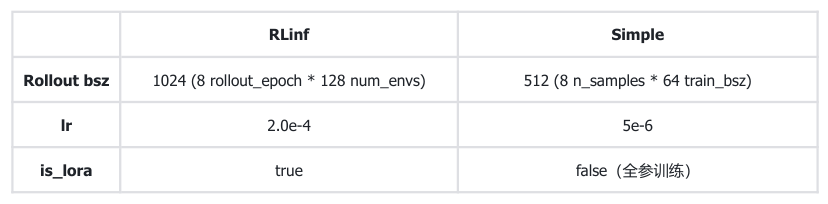
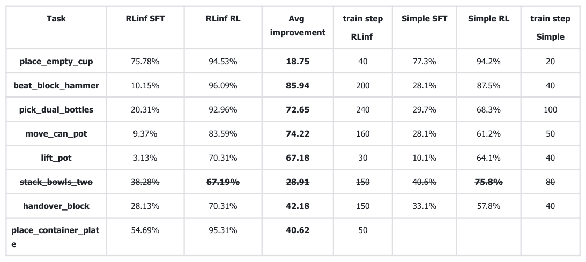
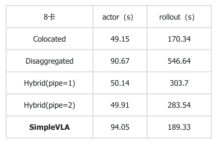

SFT 与 RL 的共同场景起点
RoboTwin 实验解读
RLinf 的增益成立，但归因受实验契约约束
性能、效率与归因边界必须一起判断
CONTEXT
判断框架性能提升 ≠ RL 单独贡献
先锁定实验契约，再谈 train SSR
128 个 OOD seed 是评估契约；当前主结果报告的是 train SSR，不是 OOD SSR。
评估契约，不等于已报告的 OOD SSR 结果
后续 train SSR 比较的固定平台
WHAT THIS CHANGES后续结果的有效范围是固定 RoboTwin 配置、seed、评估口径和 8 卡 A800；当前计划不声称已证明 OOD SSR 泛化。

RLinf 的训练信号来自一条完整链路
训练信号由采样规模、奖励粒度、优势估计和参数更新共同决定。
Rollout 采样
并行生成一轮轨迹。
Group 组织
按 group size 8 形成比较单元。
Action-level reward
把任务反馈落到动作粒度。
GRPO 优势估计
计算用于 actor 更新的优势信号。
LoRA 更新
在参数高效更新范围内优化策略。
训练配方的含义性能结果应归因于完整训练路径，而不应只归因于算法名称。
共享基础，但不是同构训练
共同起点存在，但多项实现差异会改变训练动态与因果解释。

| RLinf | SimpleVLA |
|---|---|
| 共同基础：SFT 模型、train/eval seeds、模型实现和 GRPO 保持一致。 | 共同基础：同左；valid action mask 工程等价 |
| bf16；rollout batch 1024 | 混合精度；rollout batch 512 |
| learning rate 2.0e-4；LoRA=true | learning rate 5e-6；全参数训练 |
| 固定轮次后过滤 collected trajectories | 每条 rollout 后即时过滤并缓存 |
| action-level reward | token-level success reward |
WHAT THIS CHANGES可以比较两套系统的实际结果，但不能证明某个 RLinf 算法组件具有独立因果优势。
8/8 任务提升，平均 train SSR 显著上升
任务级结果显示，RLinf 的 RL train SSR 增益不是单个任务的偶然现象；该页不报告 OOD SSR。

train SSR (%)place empty cup beat block hammer pick dual bottles move can pot lift pot stack bowls two handover block place container plat e
RLinf SFTRLinf RL
75.7894.53
10.1596.09
20.3192.96
9.3783.59
3.1370.31
38.2867.19
28.1370.31
54.6995.31
提升跨越不同任务，但幅度和训练步数不同。
平均值支持 RLinf 在这组任务上的总体训练收益，不构成 OOD SSR 证据。
WHAT THIS CHANGES跨任务结果支持 RLinf 的 RL 训练有效，但当前证据报告的是 train SSR，未回答 OOD SSR 泛化。
RLinf 的平均 train SSR 增幅高于 SimpleVLA
比较 SFT→RL 的 train SSR 变化量，更能回答哪套完整系统带来了更大提升。
train SSR 24.48% → 84.63%
- 平均提升 +60.15 个百分点
- 完整训练系统的平均变化更大
train SSR 34.40% → 72.18%
- 平均提升 +37.78 个百分点
- 作为完整系统对照，而非单变量基线
一句话判断最稳妥的表述是 RLinf 完整训练系统带来更大的平均 train SSR 提升；当前证据不是 OOD SSR 结果。
敏感性边界
初始化与评估温度会改变单点 SSR
在 place_empty_cup 上，pi0 与 pi05 的 SFT 基线不同，OFT 在 Temp_eval=-1 与 1.6 下的 PPO/GRPO 结果也不同；部分温度结果未重跑，且 RL 结果统一取 50 step。
| Model | SFT | PPO | GRPO |
|---|---|---|---|
| pi0 | 45.31% | 82.03% | 83.59% |
| pi05 | 85.16% | 96.88% | 95.31% |
| OFT T=-1 | 75.78% | 92.97% | 92.19% |
| OFT T=1.6 | 86.72% | 88.28% |
- 起点不同
pi0 的 SFT 为 45.31%，pi05 为 85.16%；RL 增益不能脱离初始模型比较。
- 温度改变结果
OFT 的 PPO/GRPO 在 Temp_eval=-1 与 1.6 下呈现不同 SSR。
- 口径需固定
相关温度结果部分未重跑，且 RL 结果统一取 50 step。
因此跨任务 train SSR 结果优先于单任务单温度结果，且当前不替代 OOD SSR 证据。
8 卡条件下，colocated 更有竞争力
在同一 8 卡条件下，对齐比较 actor 与 rollout 时间。

| 8卡 | actor（s） | rollout（s） |
|---|---|---|
| Colocated | 49.15 | 170.34 |
| Disaggregated | 90.67 | 546.64 |
| Hybrid(pipe=1) | 50.14 | 303.7 |
| Hybrid(pipe=2) | 49.91 | 283.54 |
| SimpleVLA | 94.05 | 189.33 |
WHAT THIS CHANGES在当前 8 卡条件下，colocated 的 actor/rollout 更有竞争力；其他模式应按同一口径逐项比较。
最终判断
可信的是受控 train SSR 增益，纯算法优越性尚未证实
在固定 RoboTwin seed、OOD 评估契约和 8 卡 A800 条件下，RLinf 的 RL 训练在 8 个任务上将平均 train SSR 从 24.48% 提升到 84.63%，并在 colocated 配置下表现出有竞争力的 actor/rollout 时间；128 个 OOD seed 不是 OOD SSR 结果，当前证据未提供 OOD SSR。
0- 答案：train SSR 成立
8 个任务平均 train SSR：RLinf RL 84.63%，由 SFT 的 24.48% 提升；SimpleVLA RL 为 72.18%。
- 采用条件：效率有范围
8 卡 colocated 下，RLinf actor/rollout 为 49.15/170.34 秒，低于 SimpleVLA 的 94.05/189.33 秒。
- 边界：OOD 与纯算法归因未证实
128 个 OOD seed 是评估契约而非 OOD SSR 结果；精度、学习率、LoRA、valid trajectory 收集与 reward 设计不同。
最终判断受控条件下 RLinf 系统 train SSR 更强且具有效率优势；当前无 OOD SSR 结果，纯算法因果仍需额外控制变量。